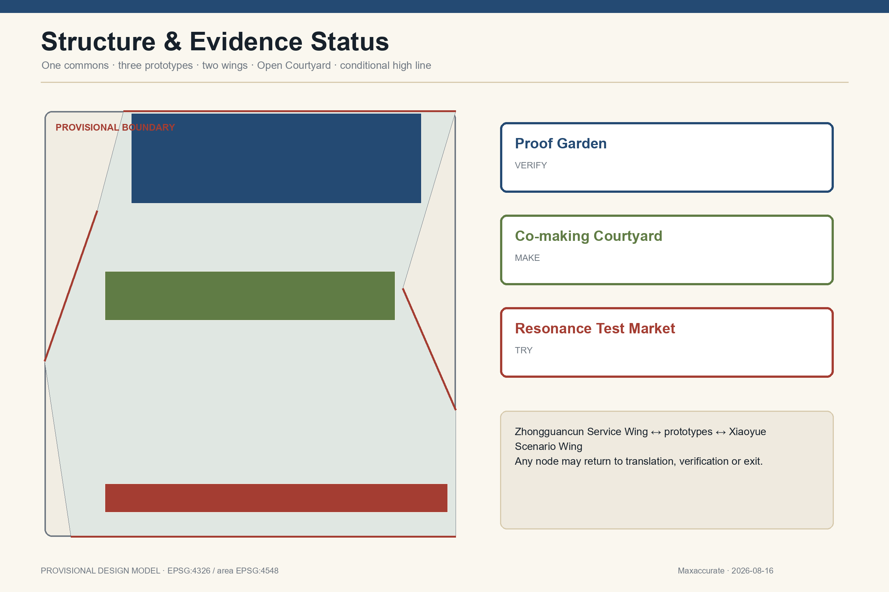
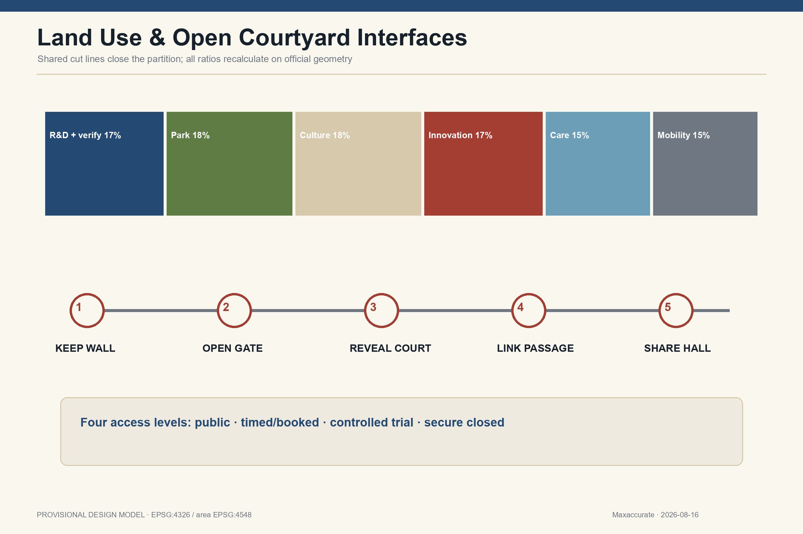
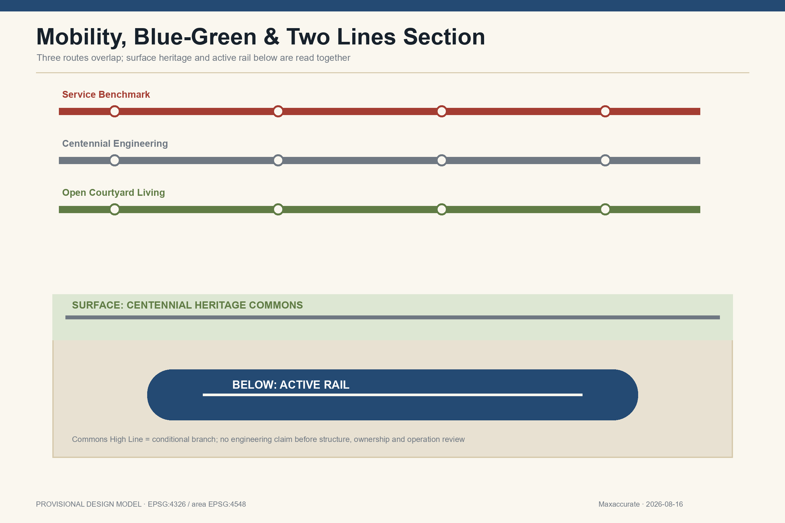

Visible formal deliverable index
Core proposition
The boundary remains repository provisional geometry. This offline exhibit shows a design model: all areas and ratios are reproducible from submitted GeoJSON, but confidence is low and the full package must recalculate on official geometry.
site_area_sqm11,412,825.386
green_ratio18.000%
public_space_ratio12.000%
Space and evidence





Three areas and two wings
Proof Garden
Controlled but observable: AI proves itself before entering daily life.
Co-making Courtyard
Bounded but enterable: residents, researchers and global teams translate and make together.
Resonance Test Market
The public may choose or refuse; trials, dissent, pauses and failures enter the Reply.
Twelve scenarios
Problem Translation Room
Living Glossary
Community AI Clinic
Multilingual Service Test
Independent Model Re-test
Staged Robot Test
SME Compliance Clinic
Beijing Adaptation Room
Service Benchmark Route
Park Climate Stewardship
Human-reviewed Heritage Guide
City Reply Archive
Six gates and three keys
Register → co-translate → review data/ethics/IP → controlled test and independent re-test → bounded public trial → pass/modify/exit and reply. Continuation or scaling requires affected users, independent verifiers, and the operational/legal responsible entity.